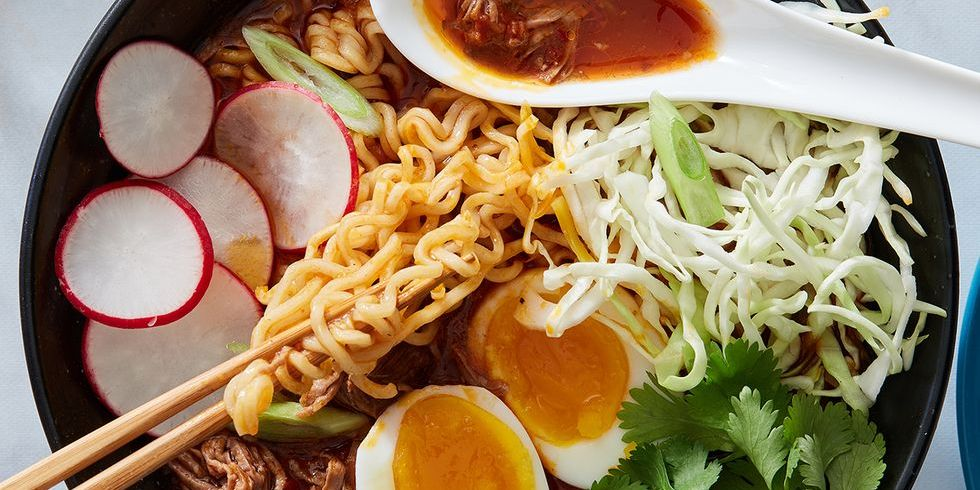

Ramen is a Japanese noodle dish. It consists of Chinese-style wheat noodles (or 中華麺, chūkamen) served in a broth; common flavors are soy sauce and miso, with typical toppings including sliced pork (chāshū), nori (dried seaweed), menma (bamboo shoots), and scallions. Ramen has its roots in Chinese noodle dishes. Nearly every region in Japan has its own variation of ramen, such as the tonkotsu (pork bone broth) ramen of Kyushu and the miso ramen of Hokkaido.